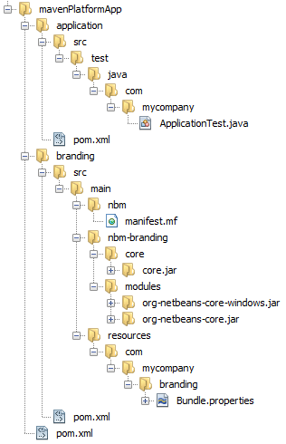
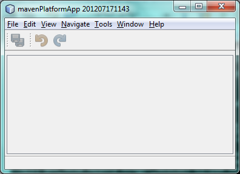
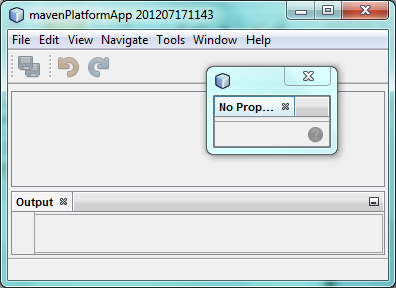
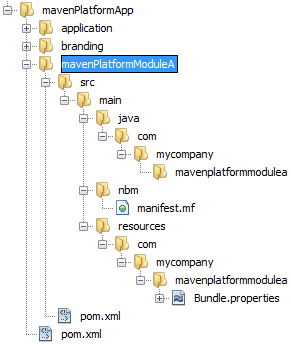
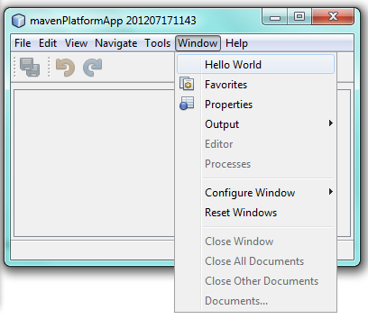
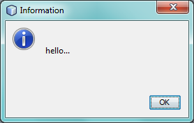

Apache NetBeans
Apache NetBeansLatest release
NetBeans Platform Maven Command Line Tutorial
| This tutorial needs a review. You can edit it in GitHub following these contribution guidelines. |
Welcome to the NetBeans Platform!
This document demonstrates how to create a NetBeans Platform application and module from a command line prompt using the Maven build framework. To create this application you do not need to install or use the NetBeans IDE. You will need to create and edit some files, but you can use a simple text editor. However, an IDE can be very helpful when performing tasks such as editing the POM and managing dependencies.
In this tutorial you will see that after you install Maven, you can specify goals and parameters and execute Maven goals from the command line prompt to create and build projects. The IDE performs the same task, but provides an interface that simplifies the task of specifying the parameters for creating projects.
Before starting this tutorial you may want to familiarize yourself with the following documentation.
Creating the NetBeans Platform Application
In this exercise you will execute the Maven goal generate from the command line to generate a new NetBeans Platform application from an archetype in the codehaus.org repository. In the command you will specify the parameters that will be used when Maven generates the application.
-
Install Maven.
-
Open a command line terminal.
-
Test your Maven installation by typing the following command.
mvn -versionAfter you type the command you will see details about the Maven installation, including the version of Maven and the JDK, such as the following:
Apache Maven 3.2.2 (45f7c06d68e745d05611f7fd14efb6594181933e; 2014-06-17T15:51:42+02:00)
Maven home: C:\apache-maven-3.2.2
Java version: 1.8.0-ea, vendor: Oracle Corporation
Java home: C:\Program Files\Java\jdk1.8.0\jre
Default locale: en_US, platform encoding: Cp1252
OS name: "windows 7", version: "6.1", arch: "amd64", family: "windows"-
Navigate to the directory where you want to create the NetBeans Platform application.
-
Type the following command, on a single line, in a terminal window (also known as the command prompt):
mvn
-DarchetypeGroupId=org.apache.netbeans.archetypes
-DarchetypeArtifactId=netbeans-platform-app-archetype
-DarchetypeVersion=1.22
-DgroupId=com.mycompany
-DartifactId=mavenPlatformApp
-Dversion=1.0-SNAPSHOT
-Dpackage=com.mycompany
-DnetbeansVersion=RELEASE120-1
archetype:generateHere it is on a single line, so that you can easily copy/paste it:
mvn -DarchetypeGroupId=org.apache.netbeans.archetypes -DarchetypeArtifactId=netbeans-platform-app-archetype -DarchetypeVersion=1.22 -DgroupId=com.mycompany -DartifactId=mavenPlatformApp -Dversion=1.0-SNAPSHOT -Dpackage=com.mycompany -DnetbeansVersion=RELEASE120-1 archetype:generate-
When prompted, enter Y, for "Yes".
You can see that the command specifies the archetype that Maven will use to create the NetBeans Platform application ( netbeans-platform-app-archetype ). The location of the repository for the archetype is ( https://repo1.maven.org/maven2/org/apache/netbeans/archetypes/ ) and the version ( 1.22 ) and GroupId ( org.apache.netbeans.archetypes ) of the archetype.
When you run the command, Maven will automatically retrieve the archetype and create the project according to the details specified in the command (artifact id, version, package).
Note. When you use NetBeans IDE to create a Mavenized NetBeans Platform application, the IDE executes a Maven goal with the same parameters.
For more information about the plugin that is used to generate the artifacts, see the documentation on the nbm-maven-plugin.
When you run the command, you will see output similar to the following in the terminal window.
[INFO] Parameter: groupId, Value: com.mycompany
[INFO] Parameter: artifactId, Value: mavenPlatformApp
[INFO] Parameter: version, Value: 1.0-SNAPSHOT
[INFO] Parameter: package, Value: com.mycompany
[INFO] Parameter: packageInPathFormat, Value: com/mycompany
[INFO] Parameter: package, Value: com.mycompany
[INFO] Parameter: version, Value: 1.0-SNAPSHOT
[INFO] Parameter: netbeansVersion, Value: RELEASE120-1
[INFO] Parameter: groupId, Value: com.mycompany
[INFO] Parameter: artifactId, Value: mavenPlatformApp
[INFO] project created from Archetype in dir: C:\apps\mavenPlatformApp
[INFO] -------------------------------------------------------------------
[INFO] BUILD SUCCESS
[INFO] -------------------------------------------------------------------
[INFO] Total time: 12.396 s
[INFO] Finished at: 2020-06-16T19:23:32+02:00
[INFO] Final Memory: 16M/133MIf you look in the root directory mavenPlatformApp that was created, you can see that the new project contains a pom.xml file and a directory for each of the default sub-modules of the archetype: application and branding.

Figure 1. Screenshot of structure of mavenPlatformApp
If you open pom.xml for mavenPlatformApp in an editor, you will see that the POM specifies all the details required for building the application:
<?xml version="1.0" encoding="UTF-8"?>
<project xmlns="http://maven.apache.org/POM/4.0.0" xmlns:xsi="http://www.w3.org/2001/XMLSchema-instance"
xsi:schemaLocation="http://maven.apache.org/POM/4.0.0 http://maven.apache.org/xsd/maven-4.0.0.xsd">
<modelVersion>4.0.0</modelVersion>
<groupId>com.mycompany</groupId>
<artifactId>mavenPlatformApp-parent</artifactId>
<version>1.0-SNAPSHOT</version>
<packaging>pom</packaging>
<name>mavenPlatformApp-parent</name>
<repositories>
<!--
Repository hosting NetBeans modules, especially APIs.
Versions are based on IDE releases, e.g.: RELEASE691
To create your own repository, use: nbm:populate-repository
If you use Apache NetBeans starting with Apache NetBeans 9.0
you can remove the netbeans repository section
-->
<repository>
<id>netbeans</id>
<name>NetBeans</name>
<url>http://bits.netbeans.org/nexus/content/groups/netbeans/</url>
</repository>
</repositories>
<build>
<pluginManagement>
<plugins>
<plugin>
<groupId>org.apache.netbeans.utilities</groupId>
<artifactId>nbm-maven-plugin</artifactId>
<version>4.3</version>
<extensions>true</extensions>
<configuration>
<brandingToken>${brandingToken}</brandingToken>
<cluster>${brandingToken}</cluster>
</configuration>
</plugin>
<plugin>
<!-- NetBeans 6.9+ requires JDK 6, starting NetBeans 7.4 source 1.7 is required -->
<groupId>org.apache.maven.plugins</groupId>
<artifactId>maven-compiler-plugin</artifactId>
<version>3.8.1</version>
<configuration>
<source>1.8</source>
<target>1.8</target>
</configuration>
</plugin>
<plugin>
<groupId>org.apache.maven.plugins</groupId>
<artifactId>maven-jar-plugin</artifactId>
<version>3.1.2</version>
</plugin>
</plugins>
</pluginManagement>
</build>
<modules>
<module>branding</module>
<module>application</module>
</modules>
<properties>
<netbeans.version>RELEASE120-1</netbeans.version>
<brandingToken>mavenplatformapp</brandingToken>
</properties>
</project>If you look at the <properties> element, you can see that the version of the NetBeans Platform is specified as RELEASE120-1. In the POM of your sub-modules, you can specify ${netbeans.version} as the version and the module will use the version specified in the parent POM project. The enables you to easily update the NetBeans Platform version for all the project’s sub-modules.
Installing and Running the NetBeans Platform Application
In this exercise you will run the Maven install goal from the command line to build the application and copy the artifacts in your local repository. The NetBeans Platform application is a multi-module application. You will use the reactor mechanism in Maven to build the application project and the project’s dependencies. After you build the application you will execute the run-platform goal to launch the application.
-
Navigate to the
mavenPlatformAppdirectory and type the following command to build the project:
mvn installThe above command will take some time to complete. When the command completes, you will see the following:
[INFO] ------------------------------------------------------------------------
[INFO] Reactor Summary for mavenPlatformApp-parent 1.0-SNAPSHOT:
[INFO]
[INFO] mavenPlatformApp-parent ............................ SUCCESS [ 0.500 s]
[INFO] mavenPlatformApp-branding .......................... SUCCESS [ 5.076 s]
[INFO] mavenPlatformApp-app ............................... SUCCESS [ 18.783 s]
[INFO] ------------------------------------------------------------------------
[INFO] BUILD SUCCESS
[INFO] ------------------------------------------------------------------------
[INFO] Total time: 27.918 s
[INFO] Finished at: 2020-06-16T19:28:51+02:00
[INFO] -------------------------------------------------------------------------
After the command above completes, navigate to the
applicationdirectory and type the following command to launch the application.
mvn nbm:run-platformWhen you run the nbm-maven-plugin with the run-platform goal, as done above, Maven will launch your NetBeans Platform application:

Figure 2. Screenshot of default application
Browse through the menus to see what your new application consists of. Open some windows, undock some of them, and you will have something that looks like this:

Figure 3. Screenshot of default application
You have now successfully created and launched your NetBeans Platform application. The default branding elements are located in the branding sub-module that was generated according to the archetype. The NetBeans IDE provides tools and wizards that can help you to modify the branding elements.
In the next section you will create a new module for the application.
Creating a NetBeans Module from an Archetype
You will now create a new module that is named mavenPlatformModuleA in the mavenPlatformApp directory. In the same way that you created the NetBeans Platform application, you will run a Maven command from the command line and use the module archetype nbm-archetype .
After you create the module, you will use a text editor to create a simple class in the module. You will then build the module to install the module in the local repository.
-
Navigate to the
mavenPlatformAppdirectory in the command line terminal and run the following command:
mvn
-DarchetypeGroupId=org.apache.netbeans.archetypes
-DarchetypeArtifactId=nbm-archetype
-DarchetypeVersion=1.17
archetype:generateHere it is on a single line:
mvn -DarchetypeGroupId=org.apache.netbeans.archetypes -DarchetypeArtifactId=nbm-archetype -DarchetypeVersion=1.17 archetype:generate-
When prompted, enter the following values:
-
groupId:
com.mycompany -
artifactId:
mavenPlatformModuleA -
version: <press Enter to accept the default>
-
package:
com.mycompany.mavenplatformmodulea -
netbeansVersion:
RELEASE110
-
You can edit netbeansVersion later. You can see that the command specifies nbm-archetype . The archetype will be retrieved from the remote repository.
When you run the command, you will see output similar to the following in the terminal window:
[INFO] ----------------------------------------------------------------------------
[INFO] Using following parameters for creating project from Archetype: nbm-archetype:1.17
[INFO] ----------------------------------------------------------------------------
[INFO] Parameter: groupId, Value: com.mycompany
[INFO] Parameter: artifactId, Value: mavenPlatformModuleA
[INFO] Parameter: version, Value: 1.0-SNAPSHOT
[INFO] Parameter: package, Value: com.mycompany.mavenplatformmodulea
[INFO] Parameter: packageInPathFormat, Value: com/mycompany/mavenplatformmodulea
[INFO] Parameter: package, Value: com.mycompany.mavenplatformmodulea
[INFO] Parameter: version, Value: 1.0-SNAPSHOT
[INFO] Parameter: netbeansVersion, Value: RELEASE110
[INFO] Parameter: groupId, Value: com.mycompany
[INFO] Parameter: artifactId, Value: mavenPlatformModuleA
[INFO] project created from Archetype in dir: C:\Users\Geertjan\demo\mavenPlatformApp\mavenPlatformModuleA
[INFO] ------------------------------------------------------------------------
[INFO] Reactor Summary for mavenPlatformApp-parent 1.0-SNAPSHOT:
[INFO]
[INFO] mavenPlatformApp-parent ............................ SUCCESS [01:09 min]
[INFO] mavenPlatformApp-branding .......................... SKIPPED
[INFO] mavenPlatformApp-app ............................... SKIPPED
[INFO] ------------------------------------------------------------------------
[INFO] BUILD SUCCESS
[INFO] ------------------------------------------------------------------------
[INFO] Total time: 01:11 min
[INFO] Finished at: 2020-06-16T19:39:56+02:00
[INFO] ------------------------------------------------------------------------If you look at the contents of the mavenPlatformApp directory, you will see that the directory contains a new directory that is named mavenPlatformModuleA . The new directory contains a src directory and pom.xml . The file bundle.properties is generated in the resources/com/mycompany/mavenplatformmodulea directory:

Figure 4. Screenshot of structure of mavenplatformmodulea
In the next step you will create a class in the java/com/mycompany/mavenplatformmodulea directory.
-
Edit the new module’s
pom.xmlto make the following changes (add marked as 1, update marked as 2) to add a dependency on the modules you are referring to in the code above.
<dependencies>
<dependency>
<groupId>org.netbeans.api</groupId>
<artifactId>org-netbeans-api-annotations-common</artifactId>
<version>RELEASE120-1</version> (2)
</dependency>
<dependency> (1)
<groupId>org.netbeans.api</groupId>
<artifactId>org-openide-util</artifactId>
<version>RELEASE120-1</version>
</dependency>
<dependency> (1)
<groupId>org.netbeans.api</groupId>
<artifactId>org-openide-awt</artifactId>
<version>RELEASE120-1</version>
</dependency>
<dependency> (1)
<groupId>org.netbeans.api</groupId>
<artifactId>org-openide-dialogs</artifactId>
<version>RELEASE120-1</version>
</dependency>
</dependencies>| 1 | added dependency |
| 2 | update platform version from RELEASE110 to RELEASE120-1 |
-
Use a text editor to create the following class
HelloWorldActionListener.javain thejava/com/mycompany/mavenplatformmoduleadirectory.
package com.mycompany.mavenplatformmodulea;
import java.awt.event.ActionEvent;
import java.awt.event.ActionListener;
import org.openide.DialogDisplayer;
import org.openide.NotifyDescriptor;
import org.openide.awt.ActionID;
import org.openide.awt.ActionReference;
import org.openide.awt.ActionRegistration;
import org.openide.util.NbBundle.Messages;
@ActionID(category = "Window",
id = "com.mycompany.mavenproject2.HelloWorldActionListener")
@ActionRegistration(displayName = "#CTL_HelloWorldActionListener")
@ActionReference(path = "Menu/Window", position = 0)
@Messages("CTL_HelloWorldActionListener=Hello World")
public final class HelloWorldActionListener implements ActionListener {
public void actionPerformed(ActionEvent e) {
NotifyDescriptor d = new NotifyDescriptor.Message("hello...");
DialogDisplayer.getDefault().notify(d);
}
}-
On the command line, navigate to the
mavenPlatformModuleAdirectory and run the following command to build and install the module in the local repository.
mvn installWhen you run the install command, Maven builds the module and copies the JAR and NBM artifacts to the local repository.
Now that the artifact is in the local repository, you can add the artifact as a dependency of the NetBeans Platform application, as shown in the next section.
Adding the New NetBeans Module as a Dependency
In this section you will add the module as a dependency of the NetBeans Platform application by declaring the dependency in the POM of the application project.
-
Open the
pom.xmlfile in theapplicationdirectory in a text editor.
-
Declare the mavenPlatformModuleA module as a dependency of the application by making the following changes (marked as 1) to the POM.
<dependencies>
<dependency>
<groupId>org.netbeans.cluster</groupId>
<artifactId>platform</artifactId>
<version>${netbeans.version}</version>
<type>pom</type>
</dependency>
<dependency>
<groupId>${project.groupId}</groupId>
<artifactId>mavenPlatformApp-branding</artifactId>
<version>${project.version}</version>
</dependency>
<dependency> (1)
<groupId>com.mycompany</groupId>
<artifactId>mavenPlatformModuleA</artifactId>
<version>1.0-SNAPSHOT</version>
</dependency>
<!-- NbModuleSuite functional in RELEASE70 or later: -->
<dependency>
<groupId>org.netbeans.api</groupId>
<artifactId>org-netbeans-modules-nbjunit</artifactId>
<version>${netbeans.version}</version>
<scope>test</scope>
</dependency>
<!-- To use Jelly Tools in your functional tests, add or replace with:
<dependency>
<groupId>org.netbeans.api</groupId>
<artifactId>org-netbeans-modules-jellytools-platform</artifactId>
<version>${netbeans.version}</version>
<scope>test</scope>
</dependency>
-->
</dependencies>| 1 | added dependency to |
Building the NetBeans Platform Application With the New NetBeans Module
You are now almost ready to launch the NetBeans Platform application with the new module installed. You first need to make sure that the new module is specified as a module of the parent POM project. You can then repeat the steps to build and launch the application.
-
Open the
pom.xmlin themavenPlatformAppdirectory in a text editor.
-
Confirm that the new module
mavenPlatformModuleA
<modules>
<module>branding</module>
<module>application</module>
<module>mavenPlatformModuleA</module>
</modules>-
Navigate to the
mavenPlatformAppdirectory in the command line terminal and type the following command to build the project.
mvn installWhen you run the command, you can see that the new module is included in the list of modules.
[INFO] ------------------------------------------------------------------------
[INFO] Reactor Summary for mavenPlatformApp-parent 1.0-SNAPSHOT:
[INFO]
[INFO] mavenPlatformApp-parent ............................ SUCCESS [ 0.198 s]
[INFO] mavenPlatformApp-branding .......................... SUCCESS [ 2.490 s]
[INFO] mavenPlatformModuleA ............................... SUCCESS [ 1.281 s]
[INFO] mavenPlatformApp-app ............................... SUCCESS [ 5.488 s]
[INFO] ------------------------------------------------------------------------
[INFO] BUILD SUCCESS
[INFO] ------------------------------------------------------------------------
[INFO] Total time: 10.668 s
[INFO] Finished at: 2020-06-16T19:51:02+02:00
[INFO] -------------------------------------------------------------------------
Navigate to the
applicationdirectory and type the following command to launch the application.
mvn nbm:run-platformWhen you run the command, Maven will launch the application with the new module.
You have now successfully added a new module to the application and launched the application. To confirm that the module was loaded when the application launched, choose Window > Hello World from the main menu of the application to display the greeting:

Figure 5. Screenshot of Message Dialog

Figure 6. Screenshot of Message Dialog
This tutorial demonstrated how you can use the Maven command line to create NetBeans Platform applications. For more examples on how to build NetBeans Platform applications and modules, see the tutorials listed in the NetBeans Platform Learning Trail.
See Also
This document described how to use the Maven build framework to create a new NetBeans Platform application without using NetBeans IDE. For more information about creating and developing applications, see the following resources.
If you have any questions about the NetBeans Platform, feel free to write to the mailing list, dev@platform.netbeans.org, or view the NetBeans Platform mailing list archive.